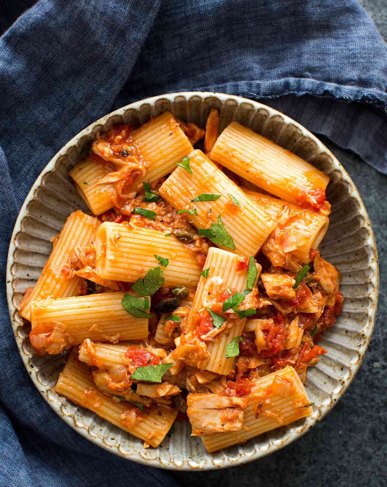

Tuna Pasta

Description
This Tuna Pasta recipe is one to die for!
It takes 20 minutes to make and it is the best recipe for an amateur cook!
Ingredients
- 250g Pasta
- 1 can Tuna
- 250ml Tomato Sauce
- 50g Olives
- Half an Onion
- Salt, Pepper, Chilli powder, Parsley
Steps
- Boil the pasta according to the instructions on the package
- Saute the onion and the olives
- After 5 minutes, add the Tuna and the Tomato Sauce
- After the pasta is done, pour them into the sauce and mix them up!
- Enjoy!